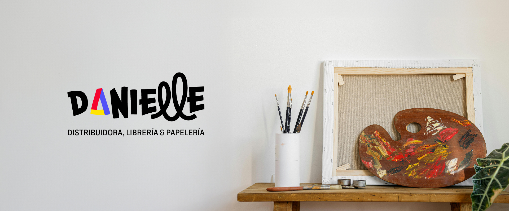
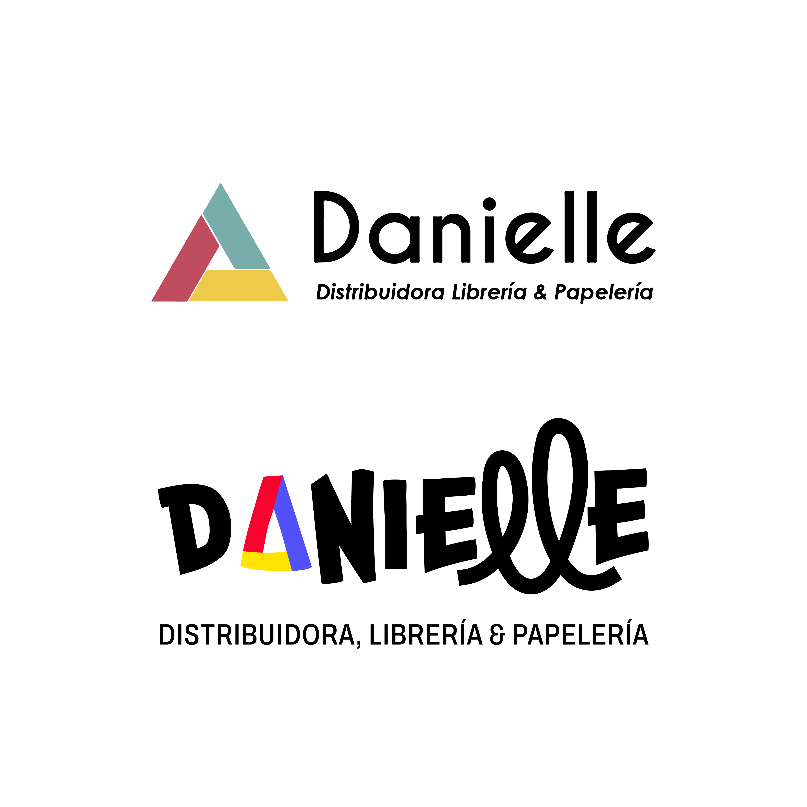
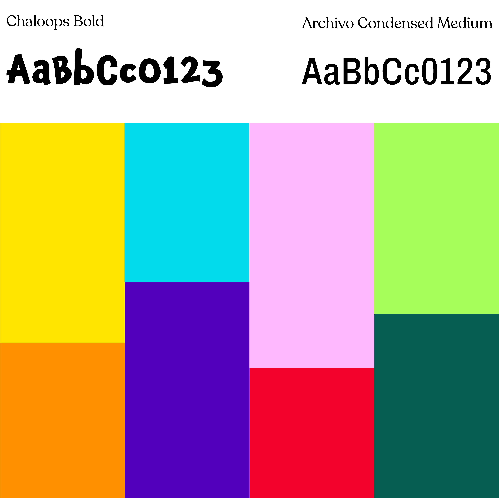
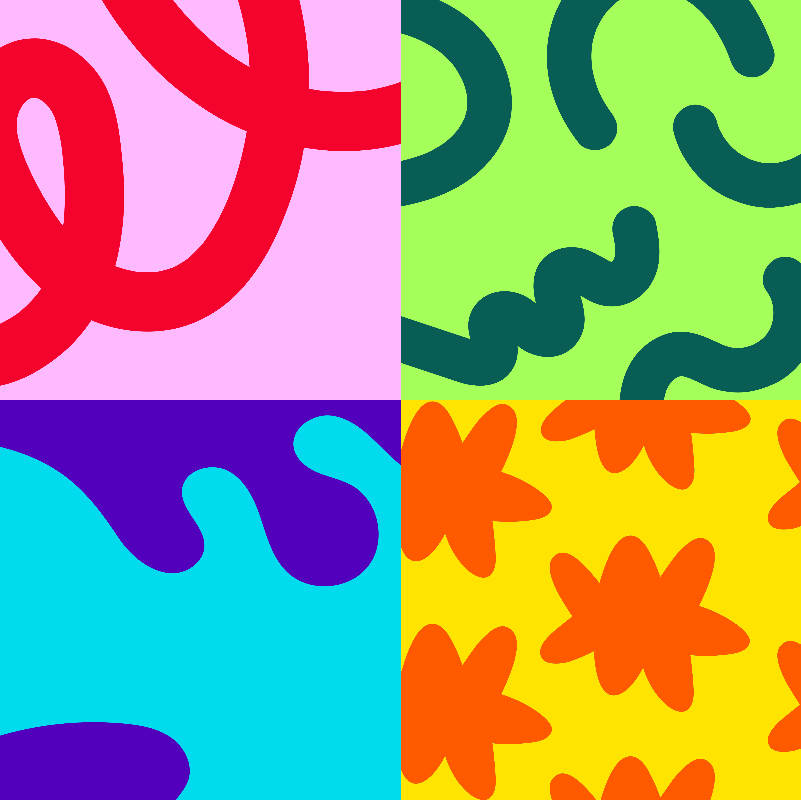
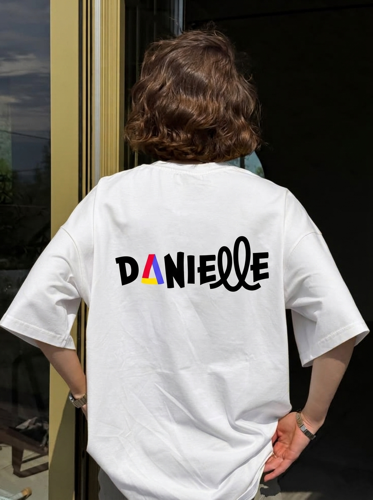
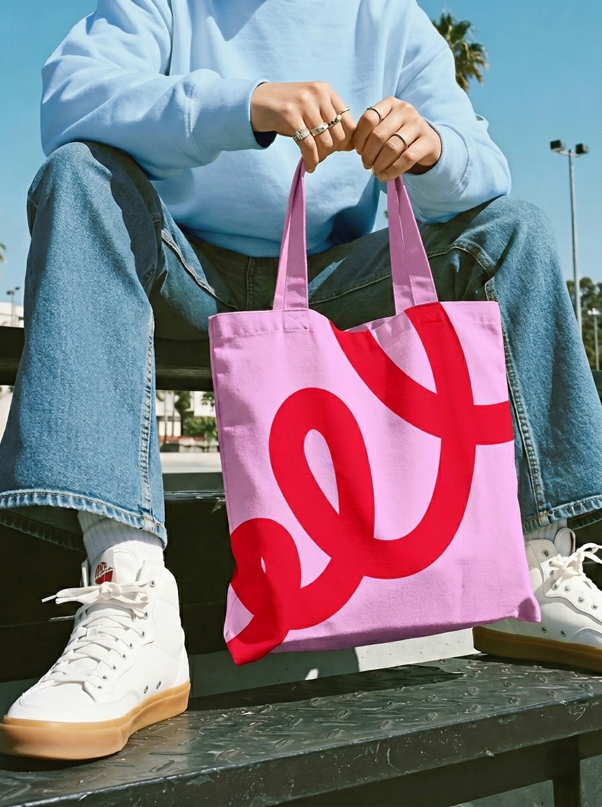
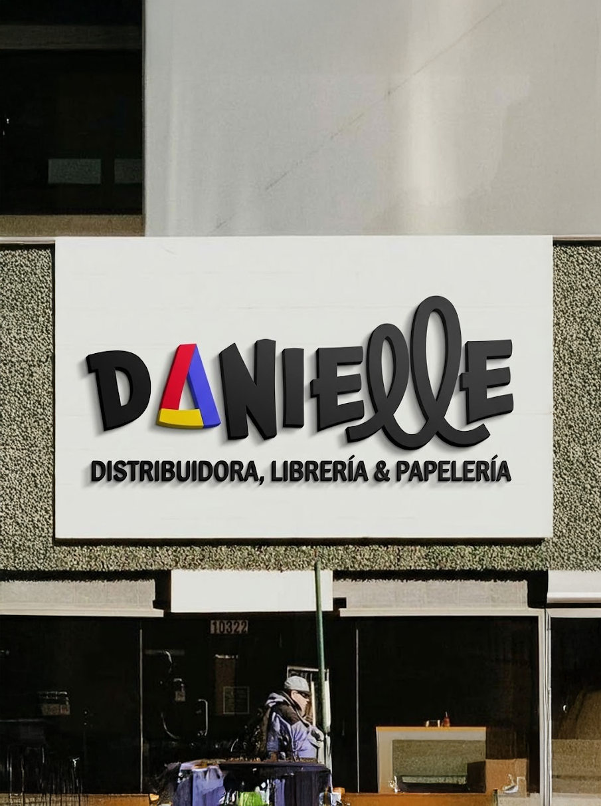
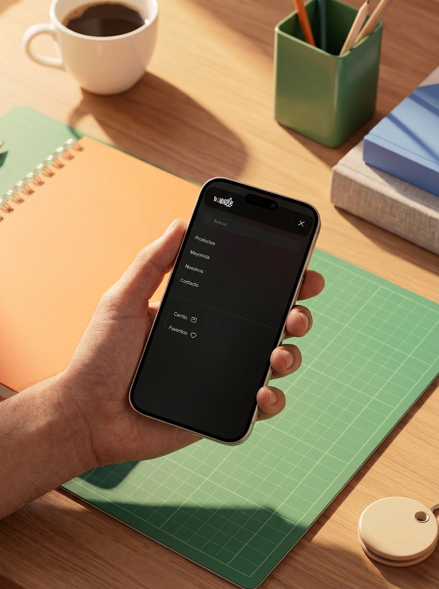
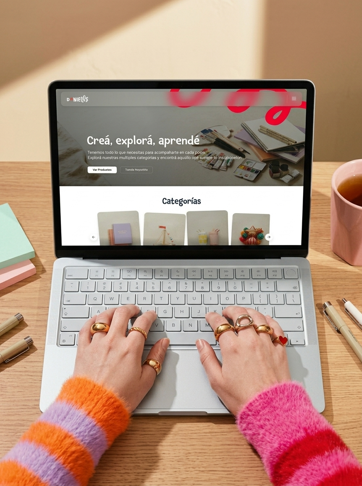
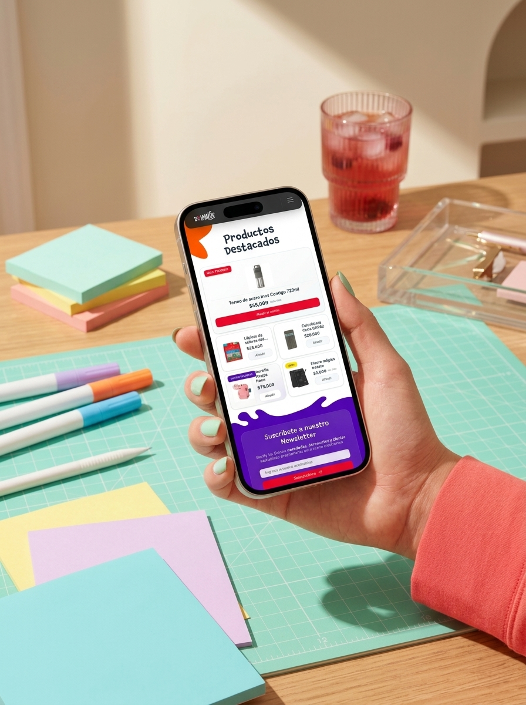

Redesigning the visual identity for a local distributor, combined with a self-initiated
e-commerce landing page concept to scale their commercial digital presence.

Danielle is a well-established local distributor, bookstore, and stationery shop that needed to modernize its outdated visual identity. The client’s initial request focused on creating a cohesive brand system based on their original logo to unify their physical store and social media presence with a closer, more creative tone. Moving beyond the official brief, I leveraged this project as a personal exploration to design a self-initiated e-commerce landing page concept, demonstrating how a real-world local brand can seamlessly expand into a responsive digital retail experience.
Brand & UI Developer
2 Months (2025)
Illustrator & Antigravity
[The Problem] Danielle operated with an outdated visual identity and a rigid legacy logo, lacking a cohesive design system to represent its creative bookstore and stationery business across physical and social media channels.
[The Goal] Redesign the visual identity into a vibrant, approachable brand system for physical touchpoints, and extend the project into a self-initiated responsive landing page to explore its digital e-commerce potential.
To focus the branding direction, I translated the client’s core values into a clean visual system that addresses the specific identity needs of a modern, creative local store
The updated visual identity reimagines the legacy logo, deconstructing its original rigid triangle into a fluid, organic centerpiece that replaces the letter "A" in the new custom logotype. Utilizing the expressive weight of Chaloops Bold for the main brand name and anchoring it with Archivo Condensed Medium for the descriptive subtext, this structural shift infuses an artistic, playful energy into the core mark while retaining a strong typographic balance suitable for diverse scale applications.


The visual language pairs friendly yet expressive typography with an intensely vibrant, high-contrast color palette. Selected specifically to break away from the cold, corporate aesthetic of the past, these contrasting hues are engineered to live harmoniously side-by-side, injecting an immediate sense of joy, artistic expression, and local closeness into every visual asset.
To complement the typographic ecosystem, I developed a library of dynamic graphic elements and fluid, organic patterns. This versatile visual toolkit allows the brand’s newfound creative identity to scale seamlessly across social media templates, print packaging, and physical storefronts, ensuring that the cheerful and energetic brand voice remains unified across all physical and digital touchpoints.

To validate the versatility of the identity system, I mapped the visual assets onto a series of physical touchpoints, ensuring the brand’s creative energy translates seamlessly from digital screens to tangible customer experiences:



The final phase of the project focused on translating the high-fidelity UI mockups into a responsive, pixel-perfect website ready for interaction, bringing the new brand presence to life directly in the browser.
Using Google Antigravity as the primary development environment, I wrote the clean HTML structure and implemented a highly customized styling architecture. The technical execution focused on recreating the fluid layouts, complex organic backgrounds, and precise card rotations crafted during the design phase, achieving a responsive experience that preserves visual fidelity across all viewports.
The resulting landing page functions as a living extension of the brand's new ecosystem, bridging creative expression with interactive web performance.


